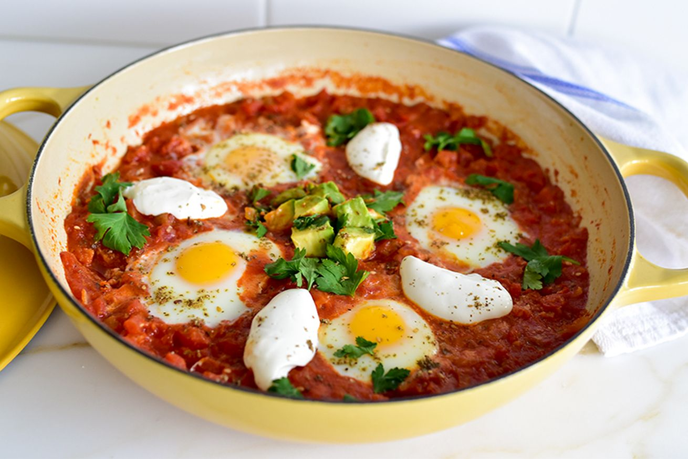
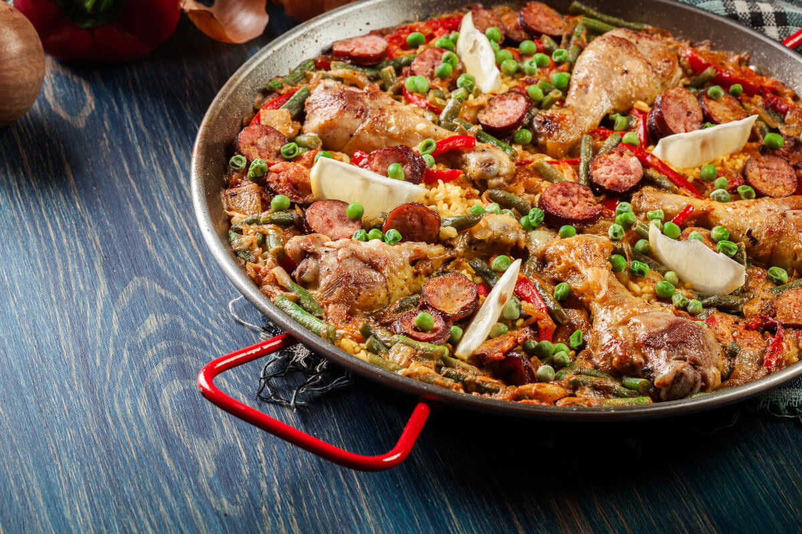

Zapoznaj się z kuchniami na całym świecie

Historia
Historia kuchni hiszpańskiej jest ściśle związana z regionami Hiszpanii. Każdy z nich miał własną, burzliwą historię. Ponadto ważne w kuchni hiszpańskiej sąwpływy innych kultur, które były obecne na Półwyspie Iberyjskim i w Hiszpanii - w daniach kuchni hiszpańskiej widać wpływ kuchni m.in. żydowskiej czy
arabskiej. Ważne znaczenie mają też produkty, które dotarły do Hiszpanii dzięki podbojom Nowego Świata i kolonizacji.

Najpopularniejsze potrawy w Hiszpani
Jeśli chcesz spróbować klasyków kuchni hiszpańskiej, to nie możesz przegapić takich potraw jak:ale tradycyjna wersja zawiera owoce morza, kurczaka i mięso królika. Specjalnym rodzaj ryżu, mięso, owoce morza oraz warzywa gotuje się na małym ogniu.
Jest to danie, które przygotowuje się długo, ale właśnie czas sprawia, że jest ono tak aromatyczne. Kluczem do udanej paelli jest szafran - ta cenna przyprawa
nadaje także potrawie niesamowity, żółty kolor.
zobaczyć bardzo często - to zwykle wielka, wisząca noga pół dzikiej hiszpańskiej świni (cerdo iberico). Jest to szynka długodojrzewająca, a pełen proces
dojrzewania trwa 9 miesięcy w niskiej temperaturze. Następnie szynka dojrzewa prawie rok. Jamon iberico jest używane nie tylko do tapas, ale także jako danie
główne. Sztuką jest prawidłowe cięcie szynki, tak by była ona odpowiednio cienka i aksamitna.
czerstwego chleba. Jest to lekka, chłodna zupa, podawacza szczególnie chętnie latem podczas hiszpańskich upałów.
To hiszpańskie danie polega na przesmażeniu ziemniaków na patelni z oliwą i zalanie ich mieszanką jajeczną. Do tej potrawy dodaje się także cebulę,
hiszpańską ostrą kiełbaskę chorizo, paprykę oraz szczypiorek. Gdy tortilla hiszpańska jest gotowa, kroi się ją na kawałki jak pizzę. Zjada się ją o każdej
porze - na śniadanie, obiad i kolację, jako przystawkę, czyli tapas lub jako danie główne.